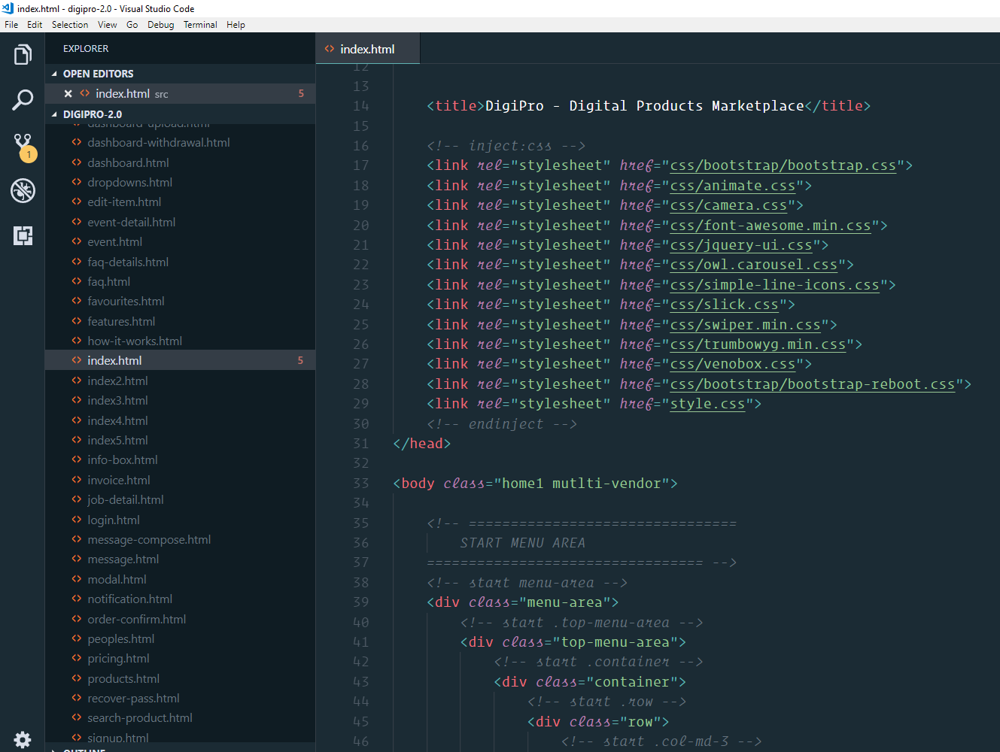
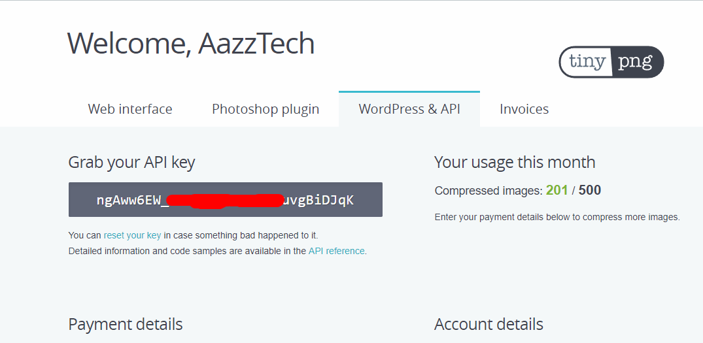
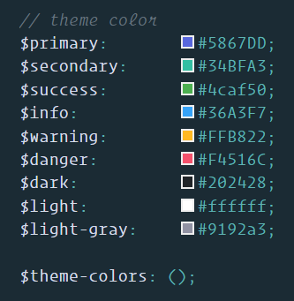

Theme Name: DigiPro - Digital Products Marketplace
Author: AazzTech
Author URI: http://aazztech.com/
Created: Oct 21, 2018
Updated: Mar 30, 2019
Version: 2.1.0
License: © AazzTech
BIG THANKS for purchasing this theme, your support is truly appreciated! This document covers the installation and use of this template and often reveals answers to common problems and issues - read this document thoroughly if you are experiencing any difficulties. If you have any questions that are beyond the scope of this document, Please feel free to contact with our dedicated Support team
After unzip the download pack, you'll find a Template Folder ( DigiPro ) with all the files. You can view this Template in any browser, you can display or edit the Template without an internet connection.
Now open your FTP Client (like Filezilla) and upload the content of the Template on your server root. Once the files are done uploading go to www.yourdomainname.com/index.html
├── src
│ ├── js
│ │ ├── vendor (contains jquery plugin scripts)
│ ├── css/
| | ├── bootstrap
| | | ├── scss
| | ├── (contains plugin css)
│ ├── fonts/
│ ├── img/
│ ├── sass/
| | ├── common
| | ├── components
| | ├── mixins
│
├── .gitignore
├── gulpfile.js
├── package-lock.json
├── README.md
This Template has a Responsive layout and is based on the Bootstrap Framework. For more information about this visit Bootstrap Scaffolding.
All the files and folders are organized appropriately. These files are essential for proper working of the template. You can make changes in the files as shown below in this document but please don't alter the file structure, that is, don't remove or move any files from css, js and images folder unless instructed in this document.
Please change mata tag contents like title, name description, author, summary, Classification to improve your SEO :)
Gulp requires node to run. And it usages npm packages to perform different task, So install node and npm first. Please follow the guide
1.Installing node> Go to https://nodejs.org/en/ and download the appropriate version for your OS.
2.Installing Gulp> go to command and run
npm install -g gulp it will install gulp globally
> Now navigate to the DigiPro folder and run
npm install, it will install all the dependecies
Gulp is amazing tool for task automation. It automates time-consuming tiresome task for you. It helps keep the concentration on actual work by taking care of many redundant boring task such as sass compilation, css compression, js/css injection etc.
> gulp build
This command will take the html, css, js, fonts from the
src/ directory to
build/ with optimizing the images, compiling the sass, minimizing the css and
js file. ready to upload
> gulp dist
This command will take the html, css, js, fonts from the
src/ directory to
dist/ with optimizing the images, compiling the sass, minimizing the css and
js file. Difference between
build and
dist is on
dist command the css and js files compress into 4 files only. 2 js ile and 2
css file and injected
into html files. for better performance
> gulp serve
gulp serve command is handy during development, cause it takes the
index.html file from
src/ directory and opens in the browser at
localhost:3000/
> gulp sass
The command kind of describe itself, It compiles the sass files into
style.css
> gulp
Gulp command is equivlent to
gulp default it runs the default task that has been assigned to it. In this
particular project
Gulp serves the project in the browser, watches for sass,css,js,html changes
and synces and excutes
task associated with it.
Important note: For better image optimization, We used
Tinypng
api based
gulp-tinypng-compress package. It requires a API key to perform the task.
Please replace the api key with your own
API key like shown in the image below
to get the api key please vist this link https://tinypng.com/developers. Sign up with you email and get the api key from here https://tinypng.com/dashboard/developers
With the help of SASS we adjust our theme colors with the bootstrap default colors. You can easily update those colors. To do that find the config.bs.js in the css/bootstrap/scss folder.
Here you can change colors as your needs.
Note: This config file doesn't only mean to change colors but here you can customize any default bootstrap variables, mixins etc.
To update your map location please add your map location latitude and Longitude. to do that
go to
js > map.js and change the lat lang of with your desired location lat-lang.
and update